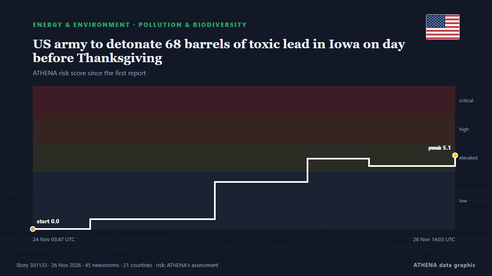

US army to detonate 68 barrels of toxic lead in Iowa on day before Thanksgiving

Residents warned to stay indoors amid conflicting information about how far the dust plume could travel The US Army is set to detonate 68 barrels – five tons – of lead azide at an ammunition plant in… από The Guardian
Τι άλλαξε 41 νέες αναφορές από 36 μέσα τις τελευταίες 24 ώρες.
Δείτε τις πηγές ›Τεκμήριωση: Ισχυρή
Αναφέρθηκε ανεξάρτητα από 45 μέσα σε 21 χώρες από τις 23 Νοε, πρώτο το Wired· η κάλυψη εξασθενεί. Το ATHENA εκτιμά τον κίνδυνο αυξημένο (5.1/10), κυρίως λόγω της σοβαρότητάς του και της εμβέλειάς του. Βεβαιότητα 89% (υψηλή): το επιβεβαιώνουν 45 ανεξάρτητα μέσα, μέση αξιοπιστία 73%. Μέσα ανά χώρα: Ηνωμένες Πολιτείες (13), Ηνωμένο Βασίλειο (8), Ινδία (4). Κάλυψη: 23 Νοε έως 25 Νοε, 46 ώρες.
Γιατί έχει σημασία: Οι εξελίξεις στην ενέργεια και τους πόρους επηρεάζουν τις τιμές καυσίμων και ρεύματος, την ασφάλεια εφοδιασμού και τους κλιματικούς στόχους.
Τι άλλαξε: 41 νέες αναφορές από 36 μέσα στο 24ωρο έως 26 Νοε.
Πρώτη διατύπωση: The Feds Left Iowans in the Dark About Plans to Blow Up Tons of Lead
ΑυτοματοποιημένοΕπιλέχθηκε, ομαδοποιήθηκε και βαθμολογήθηκε με τη δημοσιευμένη μέθοδο της ATHENA από 32 ανεξάρτητα μέσα. Ο τίτλος είναι του μέσου· οι προτάσεις της ATHENA ακολουθούν σταθερά πρότυπα - δεν τις γράφει παραγωγική ΤΝ. Πώς λειτουργεί →
Πώς να διαβάσετε αυτή τη σελίδα
- Τι διαβάζετε
- 45 μέσα σε 21 χώρες ανέφεραν αυτό το γεγονός. Οι αναφορές παρακάτω εμφανίζονται με τη σειρά που δημοσιεύτηκαν· κάθε τίτλος ανοίγει το αρχικό άρθρο. Το ATHENA δεν γράφει δικά του ρεπορτάζ.
- Η εκτίμησή μας
- Για την καταγραφή — Οι αναφορές περιγράφουν ένα ολοκληρωμένο, εσωτερικό, εμπορικό ή προσωπικό ζήτημα. Το καταγράφουμε ώστε να βλέπετε ποιος το ανέφερε και πότε. Δεν παρακολουθούμε εδώ κίνδυνο ευρύτερης σύγκρουσης.
- Πόσα στοιχεία υπάρχουν
- Ισχυρή Πολλά ανεξάρτητα μέσα σε πολλές χώρες περιγράφουν το ίδιο γεγονός.
Αφού αφαιρεθούν οι επαναλήψεις, τα άσχετα και τα παλιά στοιχεία, υπολογίζονται 32 από τις 40 αναφορές που παρατίθενται· το 100% των τίτλων αντιστοιχεί στο γεγονός.
- Τι δεν σημαίνει
- Το ATHENA μετρά πώς καλύπτεται ένα γεγονός, όχι αν είναι αληθές. Δεν είναι πρόβλεψη, κρίση για το ποιος έχει δίκιο ή συμβουλή.
- Τι θα την άλλαζε
- Αναφορές από άλλα ανεξάρτητα μέσα που δείχνουν διαφορετική εξέλιξη, ή σαφής επιβεβαίωση ή διάψευση από επίσημη πηγή.
Εκτίμηση R2 · ανανεώνεται με κάθε ενημέρωση της σελίδας. Το ATHENA δεν έχει δημοσιεύσει ακόμη ιστορικό επιδόσεων για αυτές τις εκτιμήσεις· όταν το κάνει, θα συνδέεται εδώ.
Με μια ματιά
Επιλέγεται, βαθμολογείται και γράφεται από τη δημοσιευμένη μεθοδολογία του ATHENA. Κανένας συντάκτης δεν παρεμβαίνει σε μεμονωμένα γεγονότα. Πώς παράγεται ›
| 23 Nov 18:46 UTC | 1 |
|---|---|
| 23 Nov 21:46 UTC | 0 |
| 24 Nov 00:46 UTC | 0 |
| 24 Nov 03:46 UTC | 2 |
| 24 Nov 06:46 UTC | 1 |
| 24 Nov 09:46 UTC | 0 |
| 24 Nov 12:46 UTC | 1 |
| 24 Nov 15:46 UTC | 1 |
| 24 Nov 18:46 UTC | 2 |
| 24 Nov 21:46 UTC | 7 |
| 25 Nov 00:46 UTC | 2 |
| 25 Nov 03:46 UTC | 1 |
| 25 Nov 06:46 UTC | 3 |
| 25 Nov 09:46 UTC | 5 |
| 25 Nov 12:46 UTC | 7 |
| 25 Nov 15:46 UTC | 18 |
| 25 Nov 18:46 UTC | 5 |
| 25 Nov 21:46 UTC | 3 |
| 26 Nov 00:46 UTC | 0 |
| 26 Nov 03:46 UTC | 1 |
| 26 Nov 06:46 UTC | 1 |
| 26 Nov 09:46 UTC | 1 |
| 24 Nov 03:47 UTC | 0.0 |
|---|---|
| 24 Nov 11:42 UTC | 0.7 |
| 25 Nov 04:55 UTC | 3.3 |
| 25 Nov 17:40 UTC | 4.9 |
| 26 Nov 02:09 UTC | 4.4 |
| 26 Nov 14:03 UTC | 5.1 |
| 26 Nov 14:03 UTC | 5.1 |
Γιατί αυτοί οι αριθμοί
Σημασία
Πόσο πολύ και πόσο εμφανώς αναφέρεται η είδηση.
Κίνδυνος
Τι περιγράφουν οι αναφορές, βαθμολογημένο για πιθανή ζημιά. Δεν είναι πρόβλεψη.
Βεβαιότητα
Πόσο καλά την στηρίζουν οι ανεξάρτητες πηγές.
Η κάλυψη — ποιος το ανέφερε και πότε
ο τίτλος όπως δημοσιεύτηκε · ανοίγει το πρωτότυπο- Wired · Ηνωμένες ΠολιτείεςThe Feds Left Iowans in the Dark About Plans to Blow Up Tons of Lead
- Food Safety News · Ηνωμένες ΠολιτείεςArmy to go ahead with explosion of lead; impact on livestock, cornfields unknown
- Times of India (World) · ΙνδίαWhy court cleared US Army to blow up toxic explosives despite lead contamination fears
- The Independent · Ηνωμένο ΒασίλειοCourt clears Army to blow up tons of toxic bomb chemicals in Iowa as Trump pressures incoming governor
- Small Wars Journal · Ηνωμένες ΠολιτείεςIowa Army Ammunition Plant Update | Press Conference
- Al Jazeera English · ΚατάρFive tonnes of explosives set to blow up in Iowa
- UPI World News · Ηνωμένες ΠολιτείεςLead azide explosion scheduled for Wednesday morning, Army says
- SBS News · ΑυστραλίαUS officials defend plan to destroy unstable explosives in Iowa after Trump pause
- Guardian Environment · Ηνωμένο ΒασίλειοIowans anxious over lead detonation: ‘We had only five days of warning’
- Business Insider · Ηνωμένες ΠολιτείεςI live 70 miles from the Iowa lead azide explosion with my 9-month-old twins. I don't know whether to leave.
- The Verge · Ηνωμένες ΠολιτείεςWhy the US Army is about to blow up nearly 10,000 pounds of unstable explosives in Iowa
- Grist · Ηνωμένες ΠολιτείεςWhat to know about the Army’s lead detonation in Iowa
- BNO News · Ηνωμένες ΠολιτείεςFEMA recommends evacuations ahead of planned blasts at Iowa ammunition plant
- The Independent · Ηνωμένο ΒασίλειοThe US Army will be detonating a 5-ton stockpile of lead azide in Iowa. Here's what to know
- The Guardian · Ηνωμένο ΒασίλειοUS army to detonate 68 barrels of toxic lead in Iowa on day before Thanksgiving
- The Independent · Ηνωμένο ΒασίλειοNew maps issued hours before Iowa detonation show toxic cloud to spread to second state
- Science news · Ηνωμένες ΠολιτείεςScientists scramble to track lead plume from planned U.S. Army blast
- Israel Hayom (English) · ΙσραήλIowa 'lead bomb': Evacuation advisory over 'air plume'
- The San Juan Daily Star · Πουέρτο ΡίκοArmy will blow up ammunition cache in Iowa today
- The Independent · Ηνωμένο ΒασίλειοEverything you need to know about the U.S. Army’s 5-ton lead azide explosion in Iowa today
- NPR · Ηνωμένες ΠολιτείεςArmy plans to detonate nearly five tons of lead-based explosives in Iowa
- The Straits Times · ΣιγκαπούρηUS military to destroy over 4,500kg of unstable explosives in Iowa
- Times of India (World) · ΙνδίαIowa residents told to take shelter as US Army prepares to detonate 5 tonnes of explosives
- The Straits Times · ΣιγκαπούρηUS Army conducts controlled detonation of lead-based explosives stockpile in Iowa
- DW English · ΓερμανίαUS Army detonates unstable lead-based explosives in Iowa
- Economic Times · ΙνδίαIowa detonation: Army sets 68-barrel lead blast
- STAT News · Ηνωμένες ΠολιτείεςRFK Jr. weighs in on plan to detonate toxic material in Iowa
- The Independent · Ηνωμένο ΒασίλειοWatch: Moment almost 10,000lbs of lead azide blown up by US Army in Iowa
- The Independent · Ηνωμένο ΒασίλειοWhat is lead azide? 5 tons of bomb materials detonated in Iowa despite health concerns
- Stuff · Νέα ΖηλανδίαWatch: US army blows up bomb chemicals in Iowa despite fears a toxic plume could endanger residents
- Ars Technica · Ηνωμένες ΠολιτείεςLead azide detonation sends clouds over Iowa as questions of health risks swirl
- Indian Express · ΙνδίαWatch: US Army detonates 5 tons of toxic explosives as lead dust fears grip Iowa
- CBC News (alternative feed) · ΚαναδάςU.S. army says detonation of bomb chemicals in Iowa a success despite toxic plume concerns
- Euronews English · ΓαλλίαVideo shows massive explosion as US Army destroys entire stockpile of lead azide
- Insurance Journal · Ηνωμένες ΠολιτείεςArmy Detonates Hazardous Material in Iowa Despite Outcry
- GMA News Online · ΦιλιππίνεςUS Army conducts controlled detonation of lead-based explosives stockpile in Iowa
- France 24 English · ΓαλλίαUS Army detonates lead explosives in Iowa despite contamination fears
- France 24 English · ΓαλλίαIowa: Toxic dust fears as US Army blows up 10,000 pounds of explosives
- Anadolu Agency (English) · ΤουρκίαUS Army detonates tons of stored explosives at Iowa facility
- RTÉ News · ΙρλανδίαContamination fears after US army detonates explosives